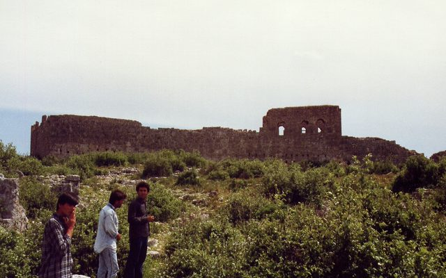
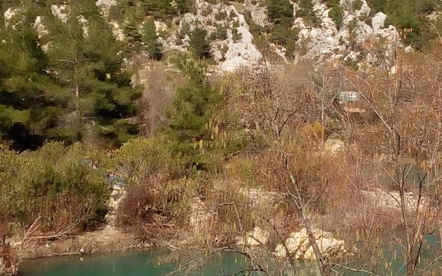

Inicio › Qué ver, provincia por provincia › Antalya
La guía Kültür Varlıkları reúne 75 lugares en Antalya: 48 yacimiento arqueológico, 11 museo, 6 castillo y edificio histórico, 3 cascada, 3 cañón, 2 espacio natural, 1 edificio religioso, 1 ruta de senderismo. A continuación encontrará lo más destacado, un mapa y la lista completa.
⭐ Lo más destacado

1 · Antalya · Yacimiento arqueológicoYacimiento de Janto
Janto fue la ciudad más importante de Licia y durante mucho tiempo su centro administrativo.

2 · Antalya · MuseoMuseo de Antalya
El Museo de Antalya es uno de los museos arqueológicos más completos de Turquía y reúne tesoros de Panfilia, Licia y Pisidia.

3 · Antalya · Yacimiento arqueológicoAspendos
Aspendos, a orillas del Köprüçay (el antiguo Eurimedonte), conserva uno de los teatros mejor preservados del mundo antiguo.
🗺 En el mapa
📍 Todos los lugares (75)
Yacimiento arqueológico (48)
Yacimiento de JantoYacimiento arqueológico · UNESCOAspendosYacimiento arqueológico Yacimiento de PataraYacimiento arqueológico
Yacimiento de PataraYacimiento arqueológico Yacimiento de PergeYacimiento arqueológico
Yacimiento de PergeYacimiento arqueológico Yacimiento de SideYacimiento arqueológico
Yacimiento de SideYacimiento arqueológico Ciudad antigua de SyedraYacimiento arqueológico
Ciudad antigua de SyedraYacimiento arqueológico Antioquía de CragusYacimiento arqueológico
Antioquía de CragusYacimiento arqueológico AntifelosYacimiento arqueológico
AntifelosYacimiento arqueológico Ciudad antigua de AperlasYacimiento arqueológico
Ciudad antigua de AperlasYacimiento arqueológico Ciudad antigua de Apolonia (Licia)Yacimiento arqueológico
Ciudad antigua de Apolonia (Licia)Yacimiento arqueológico Ciudad antigua de AriasoYacimiento arqueológico
Ciudad antigua de AriasoYacimiento arqueológico Yacimiento de ArykandaYacimiento arqueológico
Yacimiento de ArykandaYacimiento arqueológico IdebessosYacimiento arqueológico
IdebessosYacimiento arqueológico Ciudad antigua de IotapeYacimiento arqueológico
Ciudad antigua de IotapeYacimiento arqueológico Ciudad Sumergida de KekovaYacimiento arqueológico
Ciudad Sumergida de KekovaYacimiento arqueológico KitanauraYacimiento arqueológico
KitanauraYacimiento arqueológico Ciudad antigua de CianeasYacimiento arqueológico
Ciudad antigua de CianeasYacimiento arqueológico Museo de las Civilizaciones Licias y yacimiento de AndriakeYacimiento arqueológico
Museo de las Civilizaciones Licias y yacimiento de AndriakeYacimiento arqueológico Yacimiento de LimyraYacimiento arqueológico
Yacimiento de LimyraYacimiento arqueológico Yacimiento de MyraYacimiento arqueológico
Yacimiento de MyraYacimiento arqueológico Yacimiento de OlymposYacimiento arqueológico
Yacimiento de OlymposYacimiento arqueológico Yacimiento de FaselisYacimiento arqueológico
Yacimiento de FaselisYacimiento arqueológico Ciudad antigua de FelosYacimiento arqueológico
Ciudad antigua de FelosYacimiento arqueológico Ciudad antigua de RodiápolisYacimiento arqueológico
Ciudad antigua de RodiápolisYacimiento arqueológico SebedaYacimiento arqueológico
SebedaYacimiento arqueológico Ciudad antigua de Seleucia (Panfilia)Yacimiento arqueológico
Ciudad antigua de Seleucia (Panfilia)Yacimiento arqueológico Ciudad antigua de SelgeYacimiento arqueológico
Ciudad antigua de SelgeYacimiento arqueológico Ciudad antigua de Selinunte (Cilicia)Yacimiento arqueológico
Ciudad antigua de Selinunte (Cilicia)Yacimiento arqueológico
Ciudad antigua de SillyonYacimiento arqueológico Yacimiento de SimenaYacimiento arqueológico
Yacimiento de SimenaYacimiento arqueológico Ciudad antigua de SuraYacimiento arqueológico
Ciudad antigua de SuraYacimiento arqueológico Ciudad antigua de TeimiussaYacimiento arqueológico
Ciudad antigua de TeimiussaYacimiento arqueológico Yacimiento de TermessosYacimiento arqueológico
Yacimiento de TermessosYacimiento arqueológico TrebennaYacimiento arqueológico
TrebennaYacimiento arqueológico TrysaYacimiento arqueológico
TrysaYacimiento arqueológico TyberissosYacimiento arqueológico
TyberissosYacimiento arqueológico Cueva de ÖküziniYacimiento arqueológicoAkalissosYacimiento arqueológicoArneaiYacimiento arqueológicoCueva de BeldibiYacimiento arqueológicoEtennaYacimiento arqueológicoGagaiYacimiento arqueológicoIsindaYacimiento arqueológicoKandybaYacimiento arqueológicoKorydallaYacimiento arqueológicoLamosYacimiento arqueológicoPednelissosYacimiento arqueológicoIdyrosYacimiento arqueológico
Cueva de ÖküziniYacimiento arqueológicoAkalissosYacimiento arqueológicoArneaiYacimiento arqueológicoCueva de BeldibiYacimiento arqueológicoEtennaYacimiento arqueológicoGagaiYacimiento arqueológicoIsindaYacimiento arqueológicoKandybaYacimiento arqueológicoKorydallaYacimiento arqueológicoLamosYacimiento arqueológicoPednelissosYacimiento arqueológicoIdyrosYacimiento arqueológicoMuseo (11)
Museo de AntalyaMuseo Museo de AlanyaMuseo
Museo de AlanyaMuseo Casa Museo de Atatürk en AntalyaMuseo
Casa Museo de Atatürk en AntalyaMuseo Museo Etnográfico de AntalyaMuseo
Museo Etnográfico de AntalyaMuseo Museo del Juguete de AntalyaMuseo
Museo del Juguete de AntalyaMuseo Museo Monumento de San NicolásMuseo
Museo Monumento de San NicolásMuseo Museo de SideMuseoCasa Museo de Atatürk en AlanyaMuseoMuseo de la Necrópolis de AntalyaMuseoMuseo de ElmalıMuseoMuseo MevlevihaneMuseo
Museo de SideMuseoCasa Museo de Atatürk en AlanyaMuseoMuseo de la Necrópolis de AntalyaMuseoMuseo de ElmalıMuseoMuseo MevlevihaneMuseoCastillo y edificio histórico (6)
 Castillo de AlanyaCastillo y edificio histórico
Castillo de AlanyaCastillo y edificio histórico
AlarahanCastillo y edificio histórico Puerta de AdrianoCastillo y edificio histórico
Puerta de AdrianoCastillo y edificio histórico Puente de Köprüpazar (Aspendos)Castillo y edificio histórico
Puente de Köprüpazar (Aspendos)Castillo y edificio histórico Kızılkule (Torre Roja)Castillo y edificio histórico
Kızılkule (Torre Roja)Castillo y edificio histórico Han de ŞarapsaCastillo y edificio histórico
Han de ŞarapsaCastillo y edificio histórico